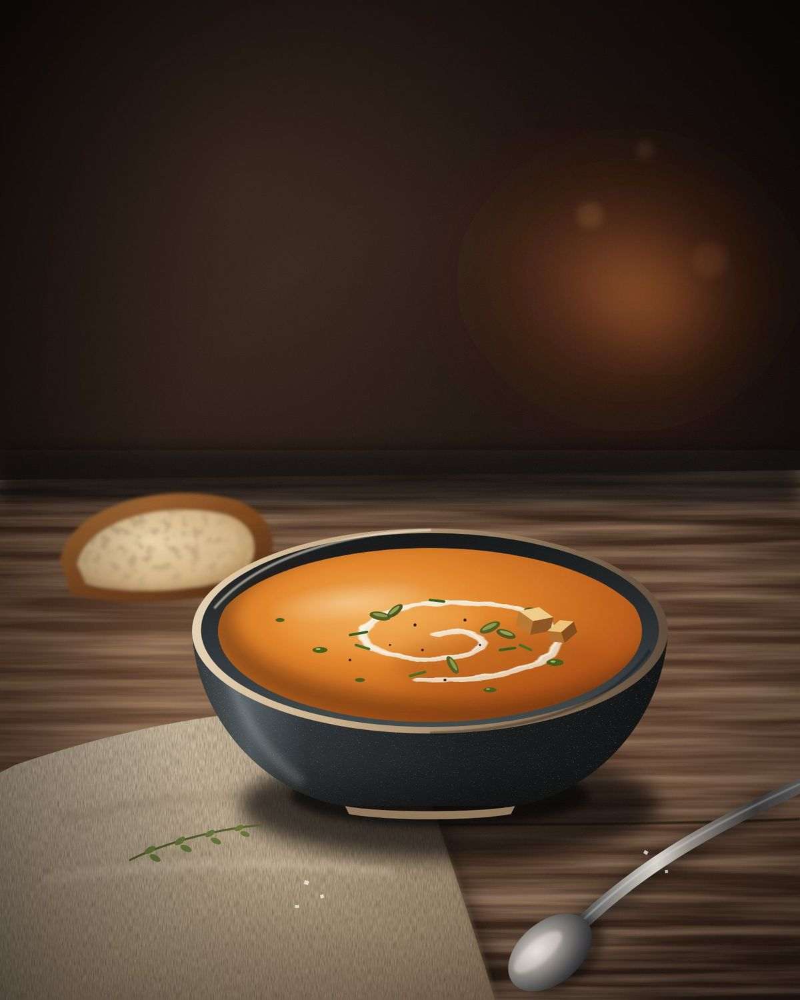

Cuisine de saison
Servi fumant, cuisiné le jour même
Velouté de courge, crème crue et graines torréfiées. Passez la souris ou le doigt sur l'assiette : la vapeur s'écarte, puis revient.

Au comptoir
Le café crème de dix heures
Même module, autre photo : une source plus étroite, posée au centre de la tasse. La vapeur ne tourne que lorsque la photo est à l'écran.
Section suivante
Titre de la section suivante
La page reprend son cours.